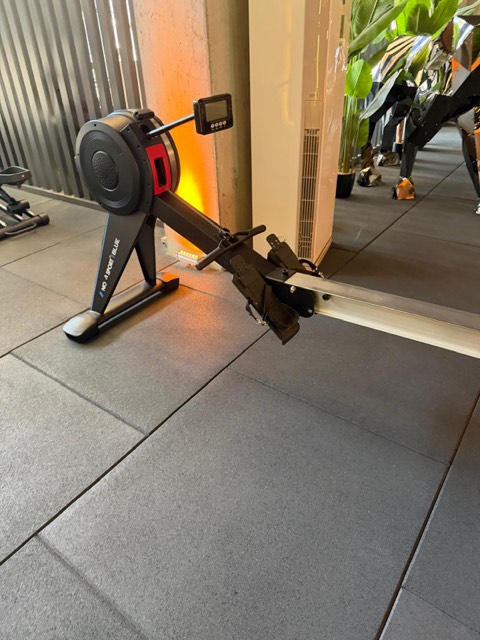

"Interval" = kısa süre hızlı, kısa süre yavaş, tekrar. Kürek makinesi düz taban için ideal: ayağa hiç darbe yok, tüm vücut çalışıyor. Sayacı başlat, telefon her geçişte bipler.
Hazır
30:00
Hangi alet?

Kürek makinesi (Nova Sport, salonun girişinde)
Kayan oturak, ayak bağlamalı pedallar, çekilen tutamak. Ekrandaki "damper" (hava direnci) kolunu 4–5'e ayarla; daha yüksek, sırtı yorar.
Kürek tekniği — 4 adım
Yakala: Dizler bükük, kollar düz, gövde hafif öne, sırt düz.
Bacak: Önce sadece bacaklarla pedalları it. Kollar hâlâ düz.
Gövde + kol: Bacaklar düzleşince gövdeyi hafif geriye yatır, en son kollarla tutamağı göğüs altına çek.
Dönüş: Tam tersi sırayla: önce kollar uzar, sonra gövde öne, en son dizler bükülür. Yavaş dön.
Sıra: bacak → gövde → kol, dönüşte kol → gövde → bacak. Gücün %60'ı bacaktan gelir. Kollarla çekiyorsan yanlış yapıyorsun.
Hızlı ve yavaş ne demek?
Hızlı
Dakikanın son 15 saniyesinde konuşamayacak kadar. Ekranda 500m temposu ("/500m") yaklaşık 2:05–2:20.
Yavaş
Kürek çekmeye devam et ama rahat; nefesini topla. 2:45–3:00 /500m.
Isınma / soğuma
Çok rahat, tekniğe odaklan.
Baş dönmesi veya göğüs sıkışması olursa dur. İlk 2 hafta "hızlı" turları %80 güçle yap, tam gaz değil.